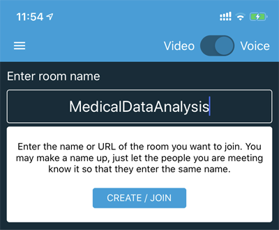
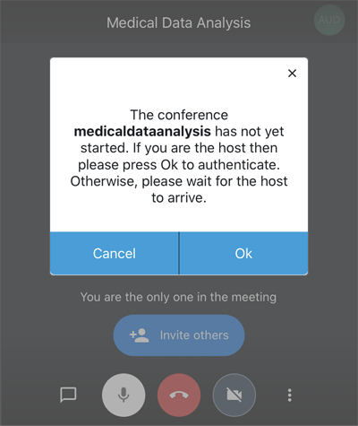
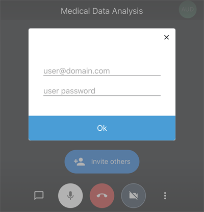

我要開會！
STEP1.下載APP
蘋果iOS:

安卓Android:

STEP2.
(只要設定一次即可)依照下面影片從螢幕左上角 > Settings > Server URL 改成 https://jitsiym.aigia.ai。
STEP3.
1.輸入此次會議名稱(建議可用會議名稱字尾加上日期，如：medfaculy_20200415)

2.系統提示您是此次會議管理者，按下 OK

3.請輸入會議管理者帳號密碼。沒有此帳號密碼無法開啟會議。
